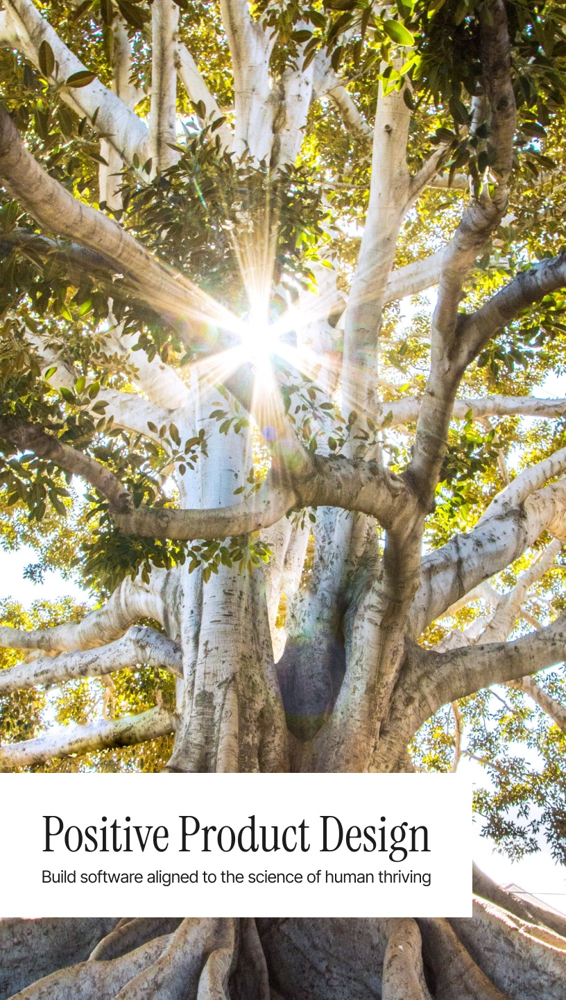

“Technology has the potential to increase the tonnage of human happiness on our planet.”
Martin Seligman, Father of
Positive Psychology
After studying with Martin Seligman, the father of positive psychology, and learning about the science of thriving, I have been working to define a new direction for technology and human potential. I have spent hundreds of hours studying different aspects of positive psychology and have seen first hand that academics are innovators who dedicate their time to expanding the boundaries of what we know.
While the majority of psychology has focused on curing illness, humanistic and positive psychology focus on how to thrive and lead a self-actualized life, emphasizing freedom, personal responsibility, self-awareness, and personal growth. And, thanks to the dedication of academics, we now have a vast amount of research and knowledge about human potential, but most of it is stuck in academic journals with narrow readership.
Many are starting to spread their knowledge and research on how individuals can thrive and “live above neutral” more broadly through their own books, TED talks, and on social media, yet most science isn’t making it to the places where most people are—the technology they use.
Positive Product Design aims to solve this problem. Tech creators can use the Positive Product Design method to spread the science of self-actualization at scale. It takes all the principles that positive psychology researchers and other academics have defined and puts them in terms that technology creators can implement to bring out the highest potential in people.
Using the methodology explained here, tech creators can measurably unlock human potential at scale.
Courtney Bigony
Creator of Positive Product Design
In this guide, “science of thriving” and “self-actualization” refers broadly to all sciences that promote life above neutral, including but not limited to humanistic psychology, positive psychology, transpersonal psychology, social psychology, developmental psychology, positive organizational scholarship, and organizational psychology.
The Positive Product Design Guide.
This guide is dedicated to the academics who inspire me to create.
By: Courtney Bigony, MAPP
Contributing Editor: Laura Kramer
Design by: Lauren Leggatt
Co-creators of the Human Potential Index: Courtney Bigony, MAPP, Jeff Smith, PhD, and Scott Barry Kaufman, PhD.
Positive Product Design co-creators and key contributors: Courtney Bigony, Jeff Smith, Laura Kramer, Maru Carrion, Chelsea Margolies, Lauren Leggatt, Huong Le; career strategist, Victoria Zenoff and academic advisors, Lyle Ungar, professor of Computer and Information Science at the University of Pennsylvania and Dan Horowitz, historian, professor of American studies at Smith College, and author of Happier? The History of a Cultural Movement That Aspired to Transform America.
© 2026 Positive Product Design.
All rights reserved.
A method for creating technology that measurably unlocks human potential.
Positive Product Design is a method for creating technology that measurably unlocks human potential. Heavily based in academic research, Positive Product Design helps product creators leverage the science of thriving to design products for positive impact.
Designing for positive impact means designing to minimize potential harm. We have natural vulnerabilities in our attention and biases, but with the right direction, designers can help protect these vulnerabilities.
Designing for positive impact also means maximizing the good, or in other words, helping people realize their full potential. Minimizing harm is different from maximizing good, and we need both.
This method honors that businesses have revenue goals and acknowledges that user growth and retention will be prioritized. The goal of Positive Product Design is to help designers find the optimum balance between what the business needs and what’s best for tech users.
There will always be features that must be designed for the business. The purpose of Positive Product Design is to help designers become aware of the vast array of opportunities to improve the lives of users, not just the user experience.
We can’t overlook the larger good. When individuals begin to thrive and become their best selves, they create communities, workplaces, and educational systems that further this effort.
This guide is for those interested in building positive technology that helps people lead more meaningful and self-actualized lives.
This guide will teach you how to design and build technology that helps people feel more energized and fulfilled. Positive Product Design is applicable across multiple domains, including workplace software, education software, social platforms, and technology developed to improve health and wellbeing.
Following are the simplified steps of the Positive Product Design method; the chapters that follow will provide the details needed for you and your organization to design products that deliver benefits for the company as much as the people who use it.
Step 1: Establish your product’s human potential benchmarks
Step 2: Research relevant science to guide your design
Step 3: Ideate and test
Step 4: Build and measure
The Positive Product Design method is designed to be flexible enough to naturally embed into existing processes.
Today, most software and apps—especially social media—motivate users with systems of punishment and reward, mimicking an outdated theory of motivation.
Push notifications and endless scrolls of information are a form of positive-intermittent reinforcement that draw people in again and again. Slot machine manufacturers use the same design to keep people glued to their product. This kind of design is used to maximize one metric: user engagement or time spent on screens. It’s used to benefit the company, not their users.
“Technology’s supposed to be good. We’ve just mostly been in The Empire Strikes Back period of our technology. It doesn’t have to be that way.”
Kara Swisher, on Unlocking Us with Brené BrownIt is undisputed that technology has advanced our society in a multitude of ways, but the larger impact on our wellbeing and mental state is now highly questionable. Many argue that technology is doing more harm than good. And dire as it sounds, what it really means is that there is a huge area for opportunity ahead.
The carrot-and-stick approach motivates behavior extrinsically, but it does not motivate behavior from something deeper. Extrinsic motivations are based on getting a reward or avoiding a punishment. An example of extrinsic motivation is people working just for the money or paying taxes to avoid a fine.
Intrinsic motivations, on the other hand, are more about personal growth and purpose. Think about people who do hobbies because of how they make them feel or working in a team because they enjoy collaboration. Lasting motivation, it has been found, is intrinsic, that is, coming from much deeper preferences and desires. We can build technology that taps into the deeper sources of intrinsic motivation; this guide will show you how.
Theories on what drive behavior have evolved significantly through time. Today, one of the most recognized theories of motivation was born from Abraham Maslow, who was one of the first to suggest that people were motivated by higher needs. He believed everyone ultimately wanted growth and self-actualization but had to have basic needs, like food and shelter, met first. His ideas became core to the human potential movement.
Unlike traditional psychology, which focuses on eliminating problems or helping people move from negative states to more neutral ones, the humanistic and positive psychologists asked what it takes for people to thrive.
Maslow systematically studied historical figures like Albert Einstein, Eleanor Roosevelt, and Abraham Lincoln to develop a list of the characteristics of self-actualizing people. He found that these individuals were motivated by health, growth, and love of humanity.
Maslow was not without criticism. Some saw his notion of self-actualization as too individualistic and selfish. Maslow questioned this later in his life, and worked to reconcile how self-actualized people could have such a strong sense of identity but also be so selfless.
Abraham Maslow died in 1970 before completing his theory of self-actualization. Cognitive scientist and humanistic psychologist, Scott Barry Kaufman would locate Maslow’s unfinished manuscripts years later and refine Maslow’s theory using modern science.
Picking up where Maslow left off, Kaufman found that 10 of Maslow’s proposed characteristics for self-actualization stood up to scientific scrutiny and identified seven principles to becoming a whole person. He was able to prove that self-actualized people don’t sacrifice their potential in the service of others, rather they use their full powers in the service of others. In other words, what benefits the individual also benefits the whole of society, creating a positive sum game.
Right now, technology is playing a zero sum game. While their profits may be increasing, the wellbeing of their users is on a decline. The question now is: Can businesses prioritize their users as much as their profit?
Organizations like Calm, BetterUp, and 15Five show that technology can be good for people and good for business. As of 2026, the meditation and sleep app Calm was valued at approximately $2 billion. As of 2026, BetterUp, a mental health and coaching platform, was valued at over $4.7 billion. As of 2026, 15Five, a holistic performance management platform has raised over $94 million to build technology that helps people thrive at work.
Tech creators, you have the potential to build a world in which technology benefits its users as much as the companies that make it. We could have a place where workplace software unlocks psychological safety and purpose while also transforming managers into positive, conscious leaders. Where social platforms genuinely strengthened relationships and dating apps actually help you meet the right person and stay with them.
Where education platforms help children cultivate self-awareness, resilience, and a personal growth mindset. And productivity apps maximize users’ time and energy. A place where health apps increase the amount of deep sleep people receive, spur movement, and inspire mindful meditation.
There are good reasons now is a time ripe for a change. People everywhere want more from their lives. 2021 saw the greatest number of resignations since records have been kept. Mindfulness has become an entire industry. People are striving for purpose. And it’s likely because they are being starved of fulfillment.
Research has proven that it’s not fame, status, or image that makes people happy or satisfied. There are actually a list of more intangible things they require. People need to:
People also need to:
“The task of leadership is to create an alignment of strengths in ways that make a system’s weaknesses irrelevant.”
Peter Drucker, Management Consultant and EducatorWe are facing a greenfield opportunity to transform technology. Just as companies like Calm, BetterUp, and 15Five have designed technology that helps people realize their full potential, you can build products and features that both protect human vulnerabilities and meet the human needs that are core to feeling more fulfilled.
We can only increase what we measure, so it goes without saying, to increase thriving, we must measure how well our products meet the core human needs that lead to that.
The Human Potential Index is currently the most complete measure of human potential and can help you create a detailed roadmap for areas of enhancement. Developed with leading self-actualization scientist, Dr. Scott Barry Kaufman and based on the work of over 100 academics, it is the best way to measure all human needs, mindsets, skills, and behaviors central to human thriving.
“If the world wants to be serious about achieving progress we need to be much more serious about measuring what matters.”
Max Roser, Founder and Director, Our World in DataOrganizations often start with a big mission, vision, and goals. Many are aspirational and often reflect some aspect of human thriving. And while most build products that reflect their original ideals, few (if any) measure how well their offerings deliver on their stated mission beyond user growth and engagement.
Consider, online educator Coursera, which started with a vision to provide life-transforming learning experiences to anyone, anywhere. To see how they are following through on their vision, they could measure personal growth mindset and mastery.
Meta’s mission is to give people the power to build community and bring the world closer together. They should rank high on High Quality Relationships.
LinkedIn’s mission is to connect the world’s professionals to make them more productive and successful. They should rank high on Purpose & Meaning.
Asana’s mission is to help humanity thrive by enabling the world’s teams to work together effortlessly. A relevant thriving construct is Flow.
Apollo Neuro is on a mission to empower people to take charge of their mental health. A relevant construct is Resilience.
Calm’s mission is to make the world happier and healthier. They should rank high on Health & Vitality.
With 99 questions covering 33 constructs, the Human Potential Index offers companies and individual tech creators the best way to measure how well their individual features and products are delivering on the original goals.
All product names, logos, and brands are trademarks of their respective owners. Use of these names does not imply endorsement with Positive Product Design unless otherwise noted.
The full measurement, which is currently under development, will include over 70 constructs.
| Thriving Construct | Questions |
|---|---|
| Health & Vitality | + I am healthy. + I feel energized. + I am able to take adequate time to rest and recover. |
| Financial Wellbeing | + I am financially secure. + My finances are rarely a source of stress for me. + I rarely worry about money. |
| Psychological Safety | + It is safe to take a risk with people I am close to. + I am able to bring up problems and tough issues with others I am close to. + My unique skills and talents are valued and utilized by those I am close to. |
| Resilience | + I tend to bounce back quickly after hard times. + It does not take me long to recover from a stressful event. + I usually come through difficult times with little trouble. |
| Personal Autonomy | + I’m free to do things in my own way. + I feel my choices express my “true self”. + I am free to do what interests me. |
| High Quality Relationships | + I do not have any difficulty expressing my feelings to people I am close to. + I try to develop meaningful relationships with others. + I take the time to understand people I am close to. |
| Thriving Construct | Questions |
|---|---|
| Self-Awareness | + I actively attempt to understand myself as best as possible. + I am aware of my inner thoughts and feelings. + I am in touch with my motives and desires. |
| Healthy Selfishness | + I balance my own needs with the needs of others. + I have healthy boundaries (e.g., I protect my needs). + I have a healthy form of selfishness that does not hurt others. |
| Self-Compassion | + I am there for myself in times of need. + During tough times, I am kind to myself. + I treat myself like a good friend in times of need. |
| Intrinsic Motivation | + My work is aligned with my deepest interests. + My work is enjoyable. + My work makes me feel vital and alive. |
| Strengths Discovery & Alignment | + I am aware of my greatest strengths. + I regularly use my strengths. + I try to use my strengths in new ways. |
| Personal Values | + I am aware of my personal values that are most important to me. + I try to align my actions with my personal values. + I hold steadfast to my personal values, even when they’re challenged. |
| Thriving Construct | Questions |
|---|---|
| Self-Regulation | + I am able to accomplish the goals I set for myself. + I set goals for myself and keep track of my progress. + I have a lot of willpower. |
| Mastery | + I am highly effective at the things I do. + I am almost always able to accomplish what I try for. + I often fulfill my goals. |
| Self-Esteem | + I am very comfortable with myself. + I am secure in my sense of self-worth. + I like myself. |
| Optimism | + I am optimistic about my future in general. + I have a positive outlook on life. + I expect more good things in my life than bad. |
| Gratitude | + I have so much in life to be thankful for. + When I look at the world I see so much to be grateful for. + If I had to list everything that I felt grateful for, it would be a very long list. |
| Curiosity | + I view challenging situations as an opportunity to grow and learn. + I find it fascinating to learn new information. + I am always looking for experiences that challenge how I think about myself and the world. |
| Thriving Construct | Questions |
|---|---|
| Compassion for Others | + I am a very compassionate person. + Taking care of others gives me a warm feeling inside. + When I see someone hurt or in need, I feel a powerful urge to take care of them. |
| Personal Growth Mindset | + I am constantly striving for personal growth. + I am constantly striving to improve myself. + I constantly strive to be a better person. |
| Progress | + I have clear short term goals. + I regularly make progress on my most important goals. + I have the resources I need to make regular progress on my goals. |
| Meaningful Contribution | + My work makes a difference. + My work has a positive impact. + My work makes a contribution to society. |
| Mattering | + Often, people trust me with things that are important to them. + People tend to rely on me for support. + When people need help, they come to me. |
| Thriving Construct | Questions |
|---|---|
| Passion | + My work is in harmony with other aspects of myself. + My work is in harmony with the other activities in my life. + When I’m engaged in my work, it makes me feel good about who I am. |
| Purpose & Meaning | + I have a personal purpose in life that will help the good of humankind. + I feel as though I have some important task to fulfill in this lifetime. + I feel a great responsibility and duty to accomplish a personal mission in life. |
| Flow — Absorption | + I often lose all sense of time during my day-to-day activities. + I often get completely absorbed in what I am doing. + I often get completely lost in thought during my day-to-day activities. |
| Flow — Challenge & Skill | + I feel just the right amount of challenge. + I know what I have to do each step of the way. + I often strike a good match between my skill and challenge level. |
| Positive Identity | + I continually strive toward becoming my ideal and best self. + My identity encompasses the use of my greatest strengths. + The different aspects of my self are all in harmony with each other. |
| Thriving Construct | Questions |
|---|---|
| Hope | + There are many ways for me to get the most important things in my life. + I can always find a way around any problem. + I am hopeful I can reach my goals even if I have to take a different route. |
| Inspiration in Life | + I frequently feel inspired. + My work feels compelling. + I am inspired by the work I do. |
| Peak Experiences | + I often have peak experiences in which I feel new horizons and possibilities opening up for myself and for others. + I often have peak experiences in which I feel one with all people and things on this planet. + I often have peak experiences in which I feel a profound transcendence of my selfish concerns. |
| Creativity | + I come up with novel ideas that tend to be useful. + I come up with lots of novel ideas at work. + My ideas tend to be very innovative. |
| Self-Actualization | + I am all that I could be. + I am operating close to my full capacity. + I am fulfilling my full potential. |
Assess individual features
Step 1: Identify the thriving construct(s) and questions most related to your company’s mission.
Step 2: Select the feature that should be delivering on the construct(s).
Step 3: Set a baseline by asking the question(s) before and after an individual uses that feature.
Step 4: Look at correlations between feature use and survey results. Did their answers increase? If not, that feature may not have enough positive impact.
Assess the entire product
Step 1: Identify the thriving construct(s) and questions most related to your company’s mission.
Step 2: Present question(s) to first-time users.
Step 3: Repeat question(s) at 3, 6, and 12 months after first use.
After using the Human Potential Index you’ll have a good idea of how well you’re delivering on your original goals. If you’re strong in the areas you looked at, great! You can move on to innovating new features. If you scored lower, however, it may be time to step back and determine the best course of action.
Designers have used several sources of information to innovate in the past—user research, market research, internal feedback. Now add to that list the latest science of thriving, which offers tech creators a new way to think about products and features.
Instead of looking at each source of information separately, consider the science of thriving and self-actualization as you conduct customer research, market research, and gather internal feedback.
“There’s still a lot of academic research that hasn’t been leveraged yet. There’s still a gap between what social science research shows and how a lot of businesses operate.”
Adam Grant, Organizational Psychologist and Professor of Management at WhartonBy combining several sources of input, you can close the gap between what the science of thriving shows us people need and what our current technology is offering.
Positive Product Design aims to design for impact. While I urge everyone to design with the goal of increasing thriving, designing to minimize potential harm is just as impactful.
Step 1: Start by identifying your platform type.
| Platform Type | Software Examples | Relevant Science |
|---|---|---|
| Workplace | Work Apps, Productivity Software, Collaboration Software | Organizational Psychology, Positive Org. Scholarship, Humanistic & Positive Psychology |
| Education | Education Apps, Learning Technologies | Developmental Psychology, Humanistic & Positive Psychology |
| Social | Social Platforms, Dating Apps | Social Psychology, Humanistic & Positive Psychology |
| Health | Fitness Apps, Lifestyle Apps, Finance Apps | Health Psychology, Humanistic & Positive Psychology |
Step 2: Search for relevant and actionable research related to your mission that can be turned into product features. Academics are spreading science through social media, books, blogs, TED Talks, and YouTube videos.
I have built a Positive Product Design Library for easy reference with academics and trustworthy sources organized by software type.
Research can also be sourced from peer reviewed journal articles using Google Scholar. Type in keywords related to your product or mission. Click on versions to find an open access/free version.
Step 3: Identify any gaps between your product and the science and develop a plan to prototype, test, and build.
Recruiting software (think Greenhouse and Lever) can leverage organizational psychology research on Realistic Job Previews. Research suggests giving applicants a realistic preview of what a job entails helps to reduce turnover.
Collaboration software (think Asana or Slack) can leverage science on deep work. Research shows deep, undistracted work leads to extraordinary performance. Google’s Focus Feature for Google Calendar automatically declines meeting requests.
Research on teams shows the ideal team size is 4–6, with no more than 10 people. Collaboration software can nudge users when teams get too big.
Google Workspace can leverage organizational psychology to increase psychological safety. Research suggests clarity of expectations increases psychological safety. Google can nudge users in gCal to set clear expectations when declining an invite.
Music platforms (think Spotify and iTunes) can leverage research showing listening to background music with lyrics hinders worker attention by developing instrumental only playlists for study, focus, and productivity.
Education software can leverage developmental psychology research showing traditional lectures are the worst way for students to learn. Students in classes with traditional lecturing are 1.5x more likely to fail. All students learn best from a combination of listening, reading, and doing.
Dating apps can leverage relationship research. Many algorithms match based on similarity, which is a weak predictor of long term success. Longer term success depends on emotional stability, kindness, loyalty, and growth mindset. Hinge uses the Nobel prize-winning Gale-Shapley algorithm.
Social platforms can leverage research on positive identity. Research shows identifying top strengths and values are central to developing positive identities. Social apps can nudge people to “Marie Kondo” their social media.
A commitment to making products that have deeper benefits can be as simple as remembering to maximize the good and minimize the harm. Let people choose how they want to experience your app and help them use your product in healthy ways.
Promote personal choice, agency, and control
Human thriving cannot result without freedom, agency, and choice. Letting people decide how they want to experience your app can have a huge impact.
When it comes to data privacy, designers can promote personal choice by:
Encourage healthy product use
The single best predictor of behavior is ease of use. Make it as easy as possible for people to do what’s healthiest. You don’t need to have only healthy features; providing healthier alternatives is just as good.
15Five developed a performance ratings feature based on market demand. However, they recognized that ratings promote bias so they developed a ratings system that reduces idiosyncratic rater bias and offers a more holistic view of a person.
The foundation of Positive Product Design is to do no harm. When we refer to minimizing harm we mean protecting human vulnerabilities.
“The major problem in technology isn’t privacy, it’s misalignment with our innate psychological vulnerabilities.”
Tristan Harris, Center for Humane TechnologyHuman attention and willpower is limited. When people are bombarded with notifications, they become distracted, less present, and overwhelmed.
Reduce notification and information overload by:
Adults spend more than 6 hours a day on digital media. Time alone is a poor metric to gauge the effect on wellbeing. Instead of trying to restrict screen time, focus on maximizing the value of time spent on apps.
15Five developed a weekly check-in and 1-on-1 feature that maximizes the quality of conversations between managers and team members. Employees spend 15 minutes a week reflecting, and managers read updates in five minutes. This helps both focus on what matters most.
All humans are prone to bias. To reduce human biases, identify the top one to two biases related to your product and develop features to mitigate them.
15Five developed a ratings alternative called the Private Manager Assessment. They ask managers what they would do with each team member rather than what they think of that individual, reducing the idiosyncratic rater bias. To reduce recency bias, 15Five developed a feature that allows managers and employees to reference past performance data for reviews.
Most assessments of performance reveal more about the rater (62%) than the actual performance of the person being rated (21%), also known as the idiosyncratic rater bias.
All technology used to extremes can cause harm, even when the intention was good. Facebook’s like button was originally intended to uplift, but when used to extremes by teenagers with low self-esteem it may have detrimental effects.
When planning features, ask: What could the negative impact be?
Thinking through these potential use cases will buffer against unintended consequences.
A simple way to assess how well your product minimizes harm and maximizes good.
The best way to assess the impact of your product is the Human Potential Index; however if this more rigorous assessment feels daunting, I’ve included this simple scorecard.
Every tech company will score differently based on their unique strengths and weaknesses.
“An interface is humane if it is responsive to human needs and considerate of human frailties.”
Jef Raskin, Developer of Apple MacintoshHow well does your company reduce notifications and information overload?
1. People are currently bombarded with notifications and information overload.
2. People are only somewhat protected from notification and information overload.
3. People can easily reduce notifications and are protected from overload.
How well does your company maximize the quality of screen time?
1. Most features are designed to only maximize user engagement.
2. Some features are designed to maximize the quality of screen time as well.
3. Most features are designed to maximize the quality of screen time.
How well does your company account for and reduce human biases?
1. We do not currently account for or reduce human biases.
2. Features are somewhat designed to reduce human biases.
3. We account for and reduce the top 1–2 human biases.
How well does your company think through and minimize the potential negative impact?
1. We do not currently have a process in place.
2. We occasionally think through and minimize the potential negative impact.
3. We have a process in place and actively take steps to minimize harm.
Score 4–6: Technology doesn’t yet minimize harm.
Score 7–9: Moderately minimizes harm.
Score 10–12: Minimizes harm and protects human vulnerabilities.
How well does your company measure the positive psychological impact?
1. We do not currently measure beyond user growth and engagement.
2. We sometimes measure the positive psychological impact.
3. We currently measure the positive psychological impact.
How well does your company develop features using the latest science of thriving?
1. We do not currently develop features out of the latest science.
2. Some features are developed using the latest science.
3. Most features are aligned to the latest science.
How well does your company encourage healthy product use?
1. We do not currently encourage healthy product use in app.
2. We encourage healthy product use in some places.
3. We encourage healthy product use as much as possible.
How well does your company promote personal choice, agency, and control?
1. We do not currently promote personal choice, agency, and control.
2. We promote it, but not consistently.
3. We promote personal choice, agency, and control whenever possible.
Score 4–6: Technology doesn’t yet maximize good.
Score 7–9: Moderately maximizes good.
Score 10–12: Maximizes good and helps people realize their full potential.
Human-centered workplace technology start-up, 15Five, builds software with engagement, performance, and OKR features, enabling HR leaders to drive meaningful business impact.
Using the Positive Product Design method, they have designed features that unlock psychological safety, increase intrinsic motivation, strengthen relationships, and help people foster a growth mindset and counter biases.
15Five’s mission is to create highly engaged, high-performing organizations by helping people become their best selves. Their vision is to unlock the potential of every member of the global workforce.
Through an engagement-type survey, 15Five currently measures three constructs from the Human Potential Index: psychological safety, autonomy, and purpose & meaning.
15Five’s check-in feature aligns with the science of recurring 1-on-1’s. Science shows effective 1-on-1 conversations include two critical steps: a one-time role negotiation session to clarify expectations and regular, ongoing 1-on-1 meetings.
The one-time role negotiation session increases psychological safety by clarifying the role and responsibilities. Research shows role clarity helps to cultivate psychological safety because a clear understanding of expectations gives people more confidence to speak up.
Recurring 1-on-1’s that include both steps are shown to improve productivity and engagement, however most companies miss the critical first step to ensure role clarity.
15Five’s Objectives feature, originally inspired by the OKR methodology highlighted in John Doerr’s (2018) Measure What Matters, is a framework for defining and tracking business objectives and their outcomes.
The Objectives feature aligns with the science of goal setting. Research suggests goals that are more intrinsically motivating, enjoyable, and aligned with an employee’s interests motivate high performance. 15Five enables employees to create goals aligned to their interests.
Through an engagement type survey, 15Five measures three constructs from the Human Potential Index—psychological safety, autonomy, and purpose & meaning. The survey is confidential and designed to be taken every 3 to 6 months.
15Five recently implemented their engagement survey and continues to gather data on how their product features increase thriving and create highly-engaged, high-performing organizations by helping people become their best selves.
The Positive Product Design Collective is a community for companies and tech creators who publicly pledge to design for good and help humanity thrive together.
Helping People Realize Their Full Potential by:
Protecting Human Vulnerabilities by:
Technology can certainly bring out the worst in all of us, but it also has the power to bring out the best side of human nature. This is my ultimate goal and the reason I dreamed up the Positive Product Design method.
By creating a positive sum game between the world of academia and technology, businesses can innovate and people get access to healthier technology.
Tech creators, are you ready to join our community and co-create the modern human potential movement? It’s time to help humanity thrive, together.
Learn more at courtneybigony.com.
Courtney Bigony is on a mission to unlock human potential at scale. She helps companies build technology and AI that help people thrive and speaks about how Silicon Valley can join together in a movement to unlock human potential at scale.
She has a Master’s in Applied Positive Psychology from the University of Pennsylvania, where she studied with Martin Seligman, the father of positive psychology.
Positive Product Design was selected by Fast Company as a 2021 World Changing Ideas finalist in the Wellness Category.
Want to work with Courtney?
She can be reached at courtneybigony.com.
Amabile, T., & Kramer, S. (2011). The progress principle. Harvard Business Review Press.
Bakker, A. B. (2008). The work-related flow inventory. J. of Vocational Behavior, 72(3), 400-414.
Brown, J. M., Miller, W. R., & Lawendowski, L. A. (1999). The self regulation questionnaire. In Innovations in clinical practice (Vol. 17, pp. 281-293).
Carmeli, A., Brueller, D., & Dutton, J. E. (2009). Learning behaviours in the workplace. Systems Research and Behavioral Science, 26(1), 81-98.
Dutton, J. E., Roberts, L. M., & Bednar, J. (2010). Pathways for positive identity construction at work. Academy of Management Review, 35(2), 265-293.
Edmondson, A. (1999). Psychological safety and learning behavior in work teams. Administrative Science Quarterly, 44(2), 350-383.
Elliott, G. C., Kao, S., & Grant, A. M. (2004). Mattering: Empirical validation. Self and Identity, 3(4), 339-354.
Engeser, S., & Rheinberg, F. (2008). Flow, performance and moderators of challenge-skill balance. Motivation and Emotion, 32(3), 158-172.
Karwowski, M., Lebuda, I., & Wiśniewska, E. (2018). Measuring creative self-efficacy. Int. J. of Creativity & Problem Solving, 28(1), 45-57.
Kashdan, T. B., et al. (2020). The five-dimensional curiosity scale revised. Personality and Individual Differences, 157, 109836.
Kaufman, S. B. (2018). Self-actualizing people in the 21st century. J. of Humanistic Psychology, 00(0), 1-33.
Kaufman, S. B., & Jauk, E. (2020). Healthy selfishness and pathological altruism. Frontiers in Psychology, 11, 1006.
Kernis, M. H., & Goldman, B. M. (2006). A multicomponent conceptualization of authenticity. In Advances in Experimental Social Psychology (Vol. 38, pp. 283-357).
McCullough, M. E., et al. (2002). The grateful disposition. J. of Personality and Social Psychology, 82(1), 112-127.
Peterson, C., & Seligman, M. E. P. (2004). Character strengths and virtues. Oxford University Press.
Prawitz, A. D., et al. (2006). InCharge financial distress/financial well-being scale. J. of Financial Counseling and Planning, 17(1), 34-50.
Ryan, R. M., & Frederick, C. (1997). On energy, personality, and health. J. of Personality, 65(3), 529-565.
Ryff, C. D. (1989). Happiness is everything, or is it? J. of Personality and Social Psychology, 57(6), 1069-1081.
Scarpa, M. P., et al. (2021). Assessing multidimensional mattering. J. of Community Psychology.
Schwartz, S. H., et al. (2012). Refining the theory of basic individual values. J. of Personality and Social Psychology, 103(4), 663-688.
Sheldon, K. M. (2002). The self-concordance model. In Handbook of Self-Determination Research (pp. 65-86).
Sheldon, K. M., & Elliot, A. J. (1999). Goal striving, need satisfaction. J. of Personality and Social Psychology, 76(3), 482.
Sheldon, K. M., & Hilpert, J. C. (2012). The balanced measure of psychological needs. Motivation and Emotion, 36(4), 439-451.
Shiota, M. N., et al. (2006). Positive emotion dispositions. J. of Positive Psychology, 1(2), 61-71.
Smith, B. W., et al. (2008). The brief resilience scale. Int. J. of Behavioral Medicine, 15(3), 194-200.
Snyder, C. R., et al. (1991). The will and the ways. J. of Personality and Social Psychology, 60(4), 570-585.
Steger, M. F., et al. (2006). The meaning in life questionnaire. J. of Counseling Psychology, 53(1), 80-93.
Su, R., Tay, L., & Diener, E. (2014). The CIT and BIT. Applied Psychology: Health and Well-Being, 6(3), 251-279.
Tafarodi, R. W., & Swann Jr, W. B. (2001). Two-dimensional self-esteem. Personality and Individual Differences, 31(5), 653-673.
Thrash, T. M., & Elliot, A. J. (2003). Inspiration as a psychological construct. J. of Personality and Social Psychology, 84(4), 871-889.
Vallerand, R. J., et al. (2003). On obsessive and harmonious passion. J. of Personality and Social Psychology, 85(4), 756-767.
The Human Potential Index includes 33 constructs central to unlocking human potential, with academic scale references.
Influenced by: Subjective Vitality Scale (Ryan & Frederick, 1997)
Influenced by: InCharge Financial Distress/Financial Well-Being Scale (Prawitz et al., 2006)
Team Psychological Safety Scale (Edmondson, 1999)
Brief Resilience Scale (Smith et al.)
Balanced Measure of Psychological Needs Scale (Sheldon & Hilpert, 2012)
High Quality Relationships Scale (Carmeli, Brueller, & Dutton, 2009)
Authenticity Inventory (AI-3) (Kernis & Goldman)
Healthy Selfishness Scale (Kaufman & Jauk)
Influenced by: Sheldon’s Self-Concordance Model (Sheldon & Elliot, 1999)
Influenced by: VIA Survey of Character Strengths (Peterson & Seligman, 2004)
Influenced by: Schwartz Value Survey (Schwartz et al., 2012)
Self Regulation Questionnaire (Brown, Miller, & Lawendowski)
Self Liking/Self Competence Scale (Tafarodi & Swann, 2001)
Self Liking/Self Competence Scale (Tafarodi & Swann, 2001)
Comprehensive Inventory of Thriving (Su, Tay, & Diener, 2014)
Gratitude Scale (GQ-6) (McCullough, Emmons, & Tsang, 2002)
Five Dimensional Curiosity Scale Revised (Kashdan et al., 2020)
Dispositional Positive Emotions Scale (Shiota, Keltner, & John, 2006)
Influenced by: Psychological Well Being (Ryff, 1989)
Influenced by: The Progress Principle (Amabile & Kramer, 2011)
Mattering Index (Elliott, Kao, & Grant, 2004)
Mattering Index (Elliott, Kao, & Grant, 2004)
Influenced by: Passion Scale (Vallerand et al., 2003)
CSAS (Kaufman, 2018); Influenced by: MLQ (Steger et al., 2006)
Work Related Flow Inventory (Bakker, 2008); Flow Short Scale (Engeser & Rheinberg, 2008)
Work Related Flow Inventory (Bakker, 2008); Flow Short Scale (Engeser & Rheinberg, 2008)
Influenced by: Dutton’s Framework for Positive Identity Construction (2010)
Influenced by: Adult Hope Scale (Snyder et al., 1991)
Influenced by: Inspiration Scale (Thrash & Elliot, 2003)
CSAS (Kaufman, 2018)
Influenced by: Short Scale of Creative Self (Karwowski et al., 2018)
CSAS (Kaufman, 2018)
by Jeff Smith, PhD
Developed by Courtney Bigony, MAPP, Dr. Jeff Smith, and Dr. Scott Barry Kaufman, the HPI is currently the most complete measure of human potential that quantifies 33 human needs, mindsets, skills, and behaviors that lead to thriving.
Organizations can use the HPI to determine if they are building positive technology and individuals can take it to assess their level of thriving.
The HPI underwent a rigorous psychometric validation process. An extensive literature review was conducted. Over 50 validated scales with over 1300 validated questions were considered for potential inclusion.
The HPI currently includes 33 constructs from the latest scientific research across positive psychology, positive organizational scholarship, humanistic psychology, and organizational psychology.
Over 300 questions were reused, created, adapted, refined, tested, and validated during four rounds of psychometric validation with a global sample of over 2100 full-time employees. All final themes loaded on a general factor of Reaching One’s Highest Potential. All final themes include questions with a minimum α > 0.7.
Please reach out to courtneybigony.com if you would like to discuss your research or suggest additional constructs.
The following individuals at 15Five supported the development of the method: 15Five’s founder, David Hassell, co-founders, Shane Metcalf and Nazar Ivaniv, COO Jim Morrisroe, CMO Julia Stead, as well as key contributors including Courtney Yazzie, Joe LaGrutta, Meesh Lin, Holly Kennedy, Kesh Vallot Shannon, Abbigail Christensen, Ramla Mahmood, Nata Karnaulskaya, Jenn Onyeagbako, Erik Rhoten, Josh Lankford, Vicky Irvin, Heather Blair, Chris Nicol, Carly Moss, TJ Vo, Zo Nicole, James Park, Ife Akinbolaji, Katia Suchkova, Shem Rajoon, Robert Enck, Baili Bigham, Oleksij Yanko, Ben Grossblatt, Dianne Frommelt, Cathlynn Carman, Colin Powell, Harry Kaplowitz, Aliona Tudan, Chad Bender, João Guerreiro, as well as the first dozen employees who contributed to 15Five’s foundational product, business, and culture including Krystian Cybulski, Emily Diaz, Paul Logston, David Mizne, Meilena Hauslendale, Stacey Hurst, Carson Adam, Priscilla Zorrilla, Yaroslav Skorokhid, Raymond Zhou, Hollie Aghajani, Mykhailo Grabovskyi, Rafael Fernandes, Bartek Grabski, Patrick Sanders, Robert Angyal, Tim Rafferty, Kristina Mashchakevych, Mitchell Yee, Luke Guevara, Lior Givol, Jennie Yang, Seth Eisenberg, Kaelon Russell, Brad McGinity, and all other 15Five team members.
© 2026 Positive Product Design.
All rights reserved.